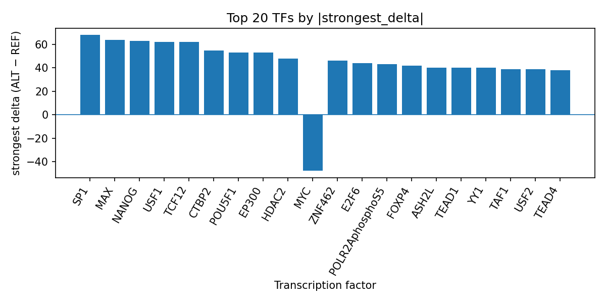

Author: snv-tf-researcher
This manuscript summarizes computational AlphaGenome transcription factor (TF) ChIP-seq predictions for rs146928446 (chr2:62309637 T>C), a GWAS-selected variant associated with skin carcinoma in situ (p = 3.0 × 10^-9; absolute effect size 7.73). The variant is annotated as an intron, non-coding transcript, and downstream gene variant, and no nearest genes were provided. AlphaGenome outputs are prediction-based rather than experimental measurements, so the results should be interpreted as prioritization signals that require orthogonal validation. Across the top TF summaries, the ALT allele was predicted to promote binding for several TFs, with the largest signed effects for SP1, MAX, NANOG, TCF12, USF1, CTBP2, EP300, POU5F1, HDAC2, and others, while MYC and POLR2A were among the TFs with predicted inhibition. These findings are consistent with a regulatory locus that may influence chromatin-associated and transcriptional programs relevant to keratinocyte biology, although no causal inference can be made from these predictions alone. Literature context from skin squamous neoplasia and in situ disease supports the relevance of transcriptional dysregulation in disease progression [1-5].
Skin carcinoma in situ is a clinically important precursor state within the spectrum of cutaneous squamous neoplasia, and in situ lesions may share molecular features with more advanced disease [1,3-5]. Genomic studies of actinic keratosis and cutaneous squamous cell carcinoma in situ have identified recurrent alterations in TP53, NOTCH1, RB1, CDKN2A, and MYC-associated copy-number changes, suggesting that transcriptional and cell-cycle regulatory programs are relevant in these lesions [2,3]. Prior work also indicates that cSCC biology can be stratified by molecular signatures and that MYC-linked regulatory networks may be involved in the malignant phenotype [4,5].
In this context, AlphaGenome can be used to computationally prioritize TF ChIP-seq effects of a GWAS-associated SNV. Here, rs146928446 was selected on the basis of effect size and statistical association with skin carcinoma in situ, but it may be in linkage disequilibrium with the true causal variant. Therefore, the present analysis is intended to generate hypotheses about potential TF-level regulatory consequences rather than to establish mechanism.
The candidate variant rs146928446 (chr2:62309637 T>C; risk allele rs146928446-C) was analyzed as a GWAS-selected SNV associated with skin carcinoma in situ. The variant was annotated with the following consequence terms: intron_variant, non_coding_transcript_variant, and downstream_gene_variant. No nearest genes were provided in the input data.
AlphaGenome TF ChIP-seq predictions were summarized at the TF level by examining signed ALT-vs-REF deltas across tracks. The provided run summary was used to identify the strongest signed effect, mean delta, median delta, number of promoted tracks, and number of inhibited tracks for each TF. Because AlphaGenome outputs are computational predictions, not experimental measurements, all results should be interpreted as prioritized hypotheses requiring experimental validation.
The workflow for the run, including disease and association retrieval, variant filtering, annotation, AlphaGenome prediction, TF summarization, literature search, and manuscript synthesis, is summarized in the pipeline figure (Figure 1).
Figure 1. Overview of the snv-tf-researcher pipeline used for this run. The workflow links the GWAS-selected disease-associated SNV to annotation, AlphaGenome TF ChIP-seq prediction, TF-level summarization, PubMed literature retrieval, and manuscript assembly.
The top TF summaries indicate that rs146928446-C is predicted to alter multiple TF ChIP-seq tracks, with several TFs showing positive signed deltas and a smaller set showing negative effects. SP1 had the largest positive strongest delta among the summarized TFs (68.0 in H1), followed by MAX (64.0), NANOG (63.0 in GM23338), TCF12 (62.0), USF1 (62.0), CTBP2 (55.0), EP300 (53.0), POU5F1 (53.0), HDAC2 (48.0), and others. In contrast, MYC was predicted to be inhibited, with a strongest delta of -48.0 in K562; POLR2A was also predicted to be inhibited, with a strongest delta of -36.0 in GM15510, and BHLHE40 showed a strongest delta of -32.0 in GM12878. The full ranked summary is provided in top_tf_effects.tsv, which contains the run-level TF effect table used to generate this manuscript.
The signed TF effect profile is visualized below (Figure 2).

Figure 2. Ranked AlphaGenome TF ChIP-seq predictions for rs146928446, showing the strongest signed ALT-vs-REF delta observed for each transcription factor. Positive values indicate predicted promotion and negative values indicate predicted inhibition; the plot highlights SP1, MAX, TCF12, USF1, EP300, MYC, POLR2A, and other top-ranked TFs.
The predicted pattern suggests that the variant may be positioned within a regulatory context affecting multiple transcriptional regulators rather than a single isolated factor. In particular, the presence of both promoted and inhibited predicted TF responses is consistent with a locus that may modulate local chromatin or promoter/enhancer accessibility. The prominence of SP1, MAX, TCF12, USF1, EP300, and POLR2AphosphoS5 in the summary is notable because these factors are generally associated with broad transcriptional control, although the present data do not establish any specific mechanism.
The AlphaGenome predictions prioritize rs146928446 as a potential regulatory SNV in skin carcinoma in situ by indicating substantial TF-specific binding changes across a diverse set of ChIP-seq tracks. The strongest predicted effects include promotion of SP1, MAX, TCF12, USF1, EP300, and related factors, alongside inhibition of MYC and POLR2A. This mixed profile suggests that the variant may influence transcriptional regulation in a context-dependent manner, but the outputs remain computational predictions and do not demonstrate binding, expression changes, or phenotypic consequences. Experimental validation will therefore be required to determine whether these predicted TF changes are observed in relevant tissue or cell models.
The literature is broadly consistent with transcriptional and genomic dysregulation in cutaneous squamous neoplasia and in situ lesions. Genomic studies of AK/CIS and cSCC have documented recurrent TP53 and NOTCH1 alterations, as well as MYC gain in more advanced lesions [2,3]. Additional work has shown that cSCC in situ and invasive disease can be separated by molecular signatures, including MYC-linked programs [4,5]. These reports do not validate the present prediction, but they do support the biological plausibility of transcription-factor-centered regulatory variation in this disease context.
More generally, the current variant-level result may help prioritize follow-up analyses around transcriptional regulators implicated in epidermal neoplasia. However, because the candidate variant was selected by effect size, it may be in linkage disequilibrium with the true causal variant. As such, the current interpretation should be confined to hypothesis generation and target prioritization rather than causal inference.
This analysis is limited by several factors. First, AlphaGenome outputs are computational predictions and not direct experimental measurements, so they require orthogonal validation in relevant biological systems. Second, the candidate SNV was selected by effect size and may be in linkage disequilibrium with the true causal variant, so the observed TF effects may reflect a linked locus rather than rs146928446 itself. Third, no nearest genes were provided, which constrains gene-level interpretation. Fourth, the available results are limited to the top TF summary table and do not include functional assays, chromatin state data, or allele-specific expression measurements. Finally, although the literature supports a role for transcriptional dysregulation in skin carcinoma in situ and cSCC progression [2-5], those studies do not establish the mechanism of the present SNV.
Perrin C. Onychopapilloma Is a Nail Bed Onycholemmal Papilloma: A Clinical and Histological Study of 56 Cases, Including Seborrheic Keratosis-Like Lesions. Am J Dermatopathol. 2026;48(5):337-353. PMID: 42012242. doi:10.1097/DAD.0000000000003054
Kim YS, Jung SH, Park YM, et al. Targeted deep sequencing reveals genomic alterations of actinic keratosis/cutaneous squamous cell carcinoma in situ and cutaneous squamous cell carcinoma. Exp Dermatol. 2023;32(4):447-456. PMID: 36533870. doi:10.1111/exd.14730
Kim YS, Shin S, Jung SH, et al. Genomic Progression of Precancerous Actinic Keratosis to Squamous Cell Carcinoma. J Invest Dermatol. 2022;142(3 Pt A):528-538.e8. PMID: 34480890. doi:10.1016/j.jid.2021.07.172
Li C, Sun C, Mahapatra KD, et al. Long noncoding RNA plasmacytoma variant translocation 1 is overexpressed in cutaneous squamous cell carcinoma and exon 2 is critical for its oncogenicity. Br J Dermatol. 2024;190(3):415-426. PMID: 37930852. doi:10.1093/bjd/ljad419
Bartolocci V, Capone A, Monetta R, et al. TRKB-based signature identifies high-risk squamous cell carcinoma cases and TRKB blockade reprograms tumor and stromal cells toward suppressive phenotypes. J Biomed Sci. 2026;33(1):. PMID: 41742188. doi:10.1186/s12929-026-01227-0